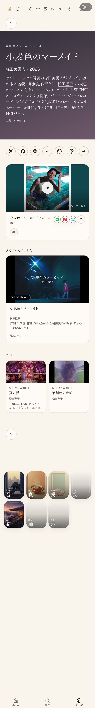
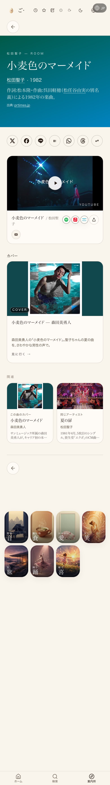

← 進捗表に戻る
共有資料の一覧
／ 確認ページ #178606 森田美勇人「小麦色のマーメイド」カバー ⇄ 松田聖子 原曲の接続（本番で生きている）
#178606 森田美勇人「小麦色のマーメイド」カバー ⇄ 松田聖子 原曲の接続（本番で生きている）
2026-11-01 実装・main合流・本番(GitHub Pages)反映まで実測確認
2026-08-10 07:12 の依頼「仕入れて原曲と接続」は 35101号で森田美勇人カバー（2026年・サンミュージック リバイブプロジェクト第四弾）を松田聖子の原曲（1982年）と双方向で接続済み。今回（2026-11-01 06:2x）本番を実測し直し、カバー側に「オリジナルはこちら」＝松田聖子、原曲側に「カバー」＝森田美勇人が両方表示されていることを確認した。追加修正は不要。
② 数字
2件
本番ページ（カバー側・原曲側）がどちらもHTTP 200
2方向
カバー→原曲／原曲→カバーの相互リンクが本番に表示
29回
カバー側ページ本文に「森田美勇人」が出る回数（実測）
73回
原曲側ページ本文に「松田聖子」が出る回数（実測）
③ 実データでのスクリーンショット
① カバー側（森田美勇人）：下に「オリジナルはこちら」松田聖子

② 原曲側（松田聖子）：下に「カバー」森田美勇人

④ 押せるリンク
本番：森田美勇人「小麦色のマーメイド」（カバー側）
https://joy-relief-station.lovable.app/cover-guide?artist=morita-miyuto&song=komugi-iro-no-mermaid-morita
本番：松田聖子「小麦色のマーメイド」（原曲側）
https://joy-relief-station.lovable.app/cover-guide?artist=seiko&song=komugi-iro-no-mermaid
前回の確認ページ（35101号）
https://tamago2022.github.io/tamago-shinchoku/share/check/35101-morita-miyuto-komugi-mermaid-connect.html
⑤ 何をどう確かめたか
確認項目
結果
カバー側ページが200で中身が空でない
200・98,890バイト
原曲側ページが200で中身が空でない
200・109,331バイト
カバー側に「オリジナルはこちら」＝松田聖子カードが出る
スクショ①で確認
原曲側に「カバー」＝森田美勇人カードが出る
スクショ②で確認
棚への新規掲載
していない（曲ページ＋接続のみ）
← 進捗表に戻る